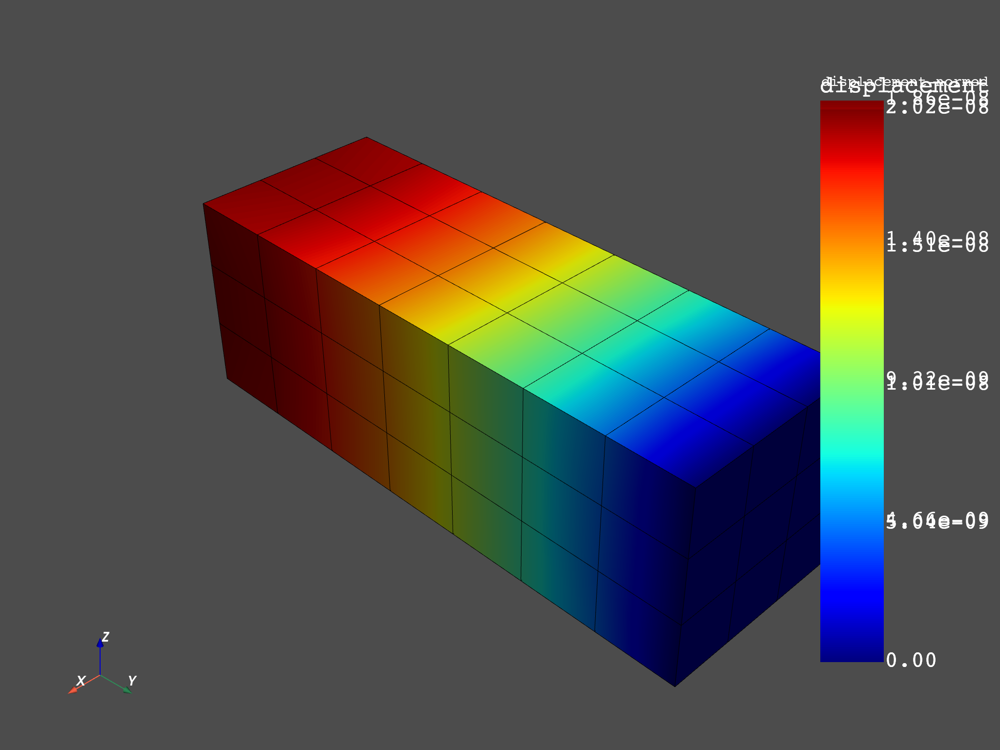

Note
Click here to download the full example code
Expand Harmonic Modal Superposition with DPF¶
Different types of linear dynamics expansions are implemented in DPF. With modal superposition used in harmonic analysis, modal coefficients are multiplied by mode shapes (of a previous modal analysis) to analyse a structure under given boundary conditions in a range of frequencies. Doing this expansion “on demand” in DPF instead of in the solver reduces the size of the result files.
import numpy as np
from ansys.dpf import core as dpf
from ansys.dpf.core import examples
from ansys.dpf.core import operators as ops
Create the data sources¶
First create a data sources with the mode shapes and the modal response The expansion is recursive in dpf: first the modal response is red, then, “upstreams” mode shapes are found in the data sources, so they are red and expanded (mode shapes x modal response)
msup_files = examples.download_msup_files_to_dict()
data_sources = dpf.DataSources(msup_files["rfrq"])
up_stream_data_sources = dpf.DataSources(msup_files["mode"])
up_stream_data_sources.add_file_path(msup_files["rst"])
data_sources.add_upstream(up_stream_data_sources)
Compute displacements¶
Once the recursivity is put in the data sources (with add_upstream) computing displacements with or without expansion, in harmonic, transient or modal analysis has the exact same syntax
model = dpf.Model(data_sources)
disp = model.results.displacement.on_all_time_freqs.eval()
freq_scoping = disp.get_time_scoping()
for freq_set in freq_scoping:
model.metadata.meshed_region.plot(disp.get_field_by_time_complex_ids(freq_set,0))
- 
Total running time of the script: ( 0 minutes 5.506 seconds)